Weka is tried and tested open source machine learning software that can be accessed through a graphical user interface, standard terminal applications, or a Java API. It is widely used for teaching, research, and industrial applications, contains a plethora of built-in tools for standard machine learning tasks, and additionally gives transparent access to well-known toolboxes such as scikit-learn, R, and Deeplearning4j.
WEKA is a Data mining workbench that stands for Waikato Environment for Knowledge Analysis.
There are many uses for WEKA for data mining purposes and processes. Examples of these include Machine learning algorithms for data mining tasks such as:
- 100+ algorithms for classification
- 75 for data preprocessing
- 25 to assist with feature selection
- 20 for clustering, finding association rules, etc
With the many possibilities that WEKA offers to its users, these include the variety of functionalities. A list of things you can learn through WEKA is listed below:
- Load data into Weka and look at it
- Use filters to preprocess it
- Explore it using interactive visualization
- Apply classification algorithms
- Interpret the output
- Understand evaluation methods and their implications
- Understand various representations for models
- Explain how popular machine learning algorithms work
- Be aware of common pitfalls with data mining
- Use Weka on your own data.... and many more!
Summary Diagram of what WEKA has to offer:
 Getting Started with WEKA
Getting Started with WEKA
Before starting with all the many possible machine learning opportunities WEKA has to offer, we must first install the application
Here is a link to download the software
Click here to download WEKA
-
WEKA offers platform downloads for different operating systems
- There is a choice to download between the stable version (more common to use) and developer version (much more intensive)
-
There is also a choice to download old versions of the software.
For this part, we will explore the explorer interface of WEKA. As you can see, there are many functionalities pointed at the top navigation part. But for this part, we will focus on the preprocess tab pointed in the photo below.
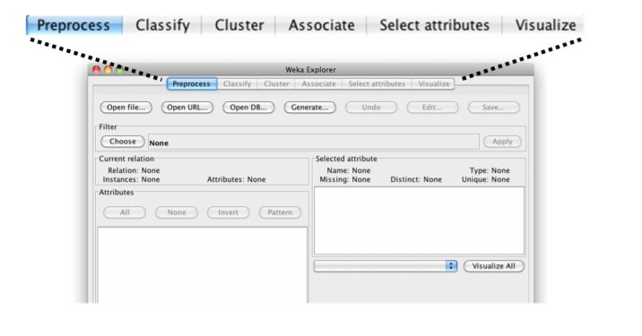
Just like your common datasets, WEKA represents data in terms of rows and columns. Attributes describe the instances or the data objects in the data sets. Instances on the other hand represent the attributes as these are data objects within the given data set. Attached below is a photo for representation.
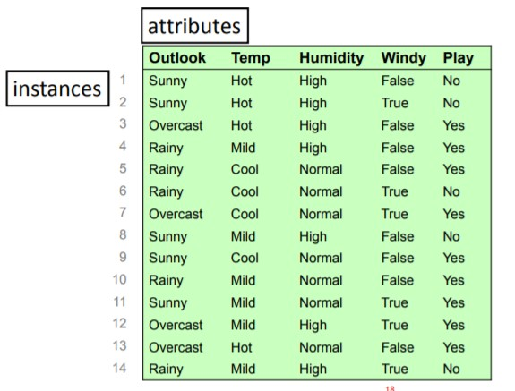
For this part, lets try opening a predefined dataset included in WEKA's database. Lets open the file weather.nominal.arff by clicking the open file button on the top left side in the preprocess tab. Locate the file in the folder "data".
After opening the file, we can see how the data in the weather.nominal dataset is represented in an organized manner including a graphic representation for each attribute and attribute value.
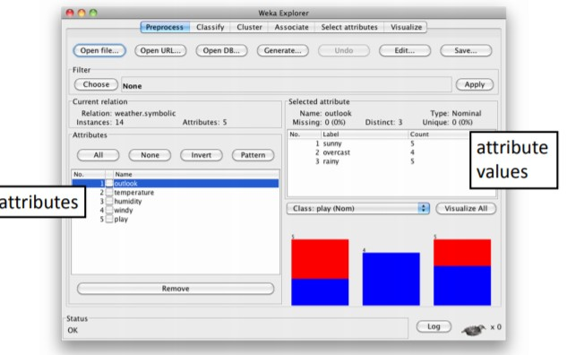
WEKA has a lot of predefined datasets included when we installed the software. These different datasets allow us to explore and understand how each dataset can be represented and edited to produce desired results. An screenshot of two datasets from the predefined datasets includes the weather.numeric dataset and glass dataset.
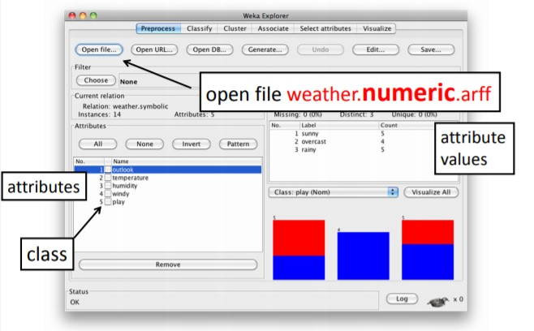
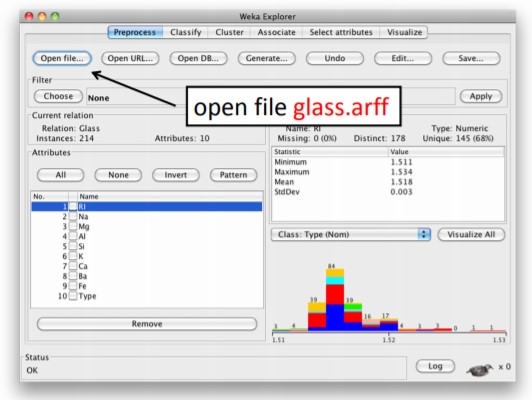
For this part, we will understand how to build a classifier by using J48 to analyze the glass.arff dataset
For this part, go to the classify tab right beside the preprocess tab. From there on, choose the available classifiers by clicking choose > classifiers > trees > J48
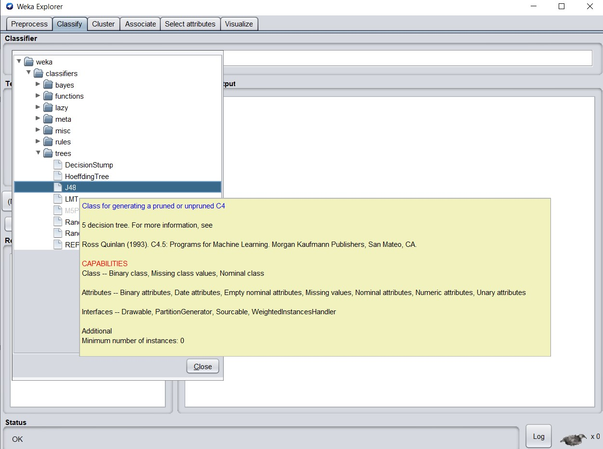
After doing so, click the start button and examine the output. Take a close look at the correctly classified instances (the percentage for each instance) and the confusion matrix on where errors might occur during the classification phase.
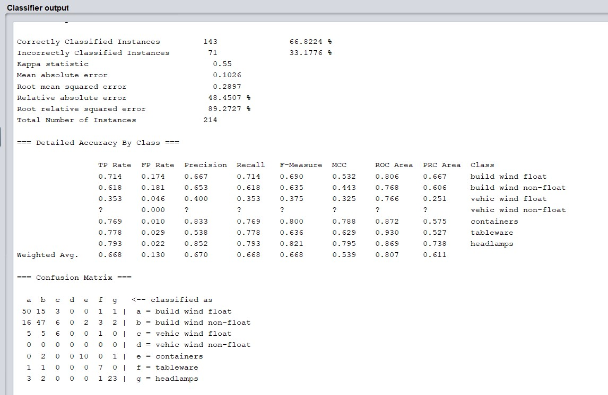
WEKA has powerful functionalities that includes using filters. With filters, you can easily filter out data to have a better, cleaner, or more relevant dataset as it can remove missing data, bad characters, outliers, and the like.
Let's open the weather.nominal.arff dataset again. Filters have two main categories for filters namely, unsupervised and supervised filters
Supervised Filters consider the class value, while unsupervised filters don't. For example, the unsupervised discretize filter only considers the attribute being discretized. While it can 'optimize' the number of bins, it does so only with respect to self encoding. However, the supervised discretize filter will break the attribute into bins that provide the most information about the class.
Using filters let's us also filter out between attributes and instances
Recall in the previous sections that attributes describe data objects/instances. Hence, they are somewhat like the "header" for a data column. On the other hand, instances are the data objects in the data set. Instances represent the attributes.
Using the unsupervised attribute filter Remove, lets look at our weather.nominal dataset. Click more information and look at the attributes. Set the attributeIndices to 3 and hit the OK button and apply the filter.
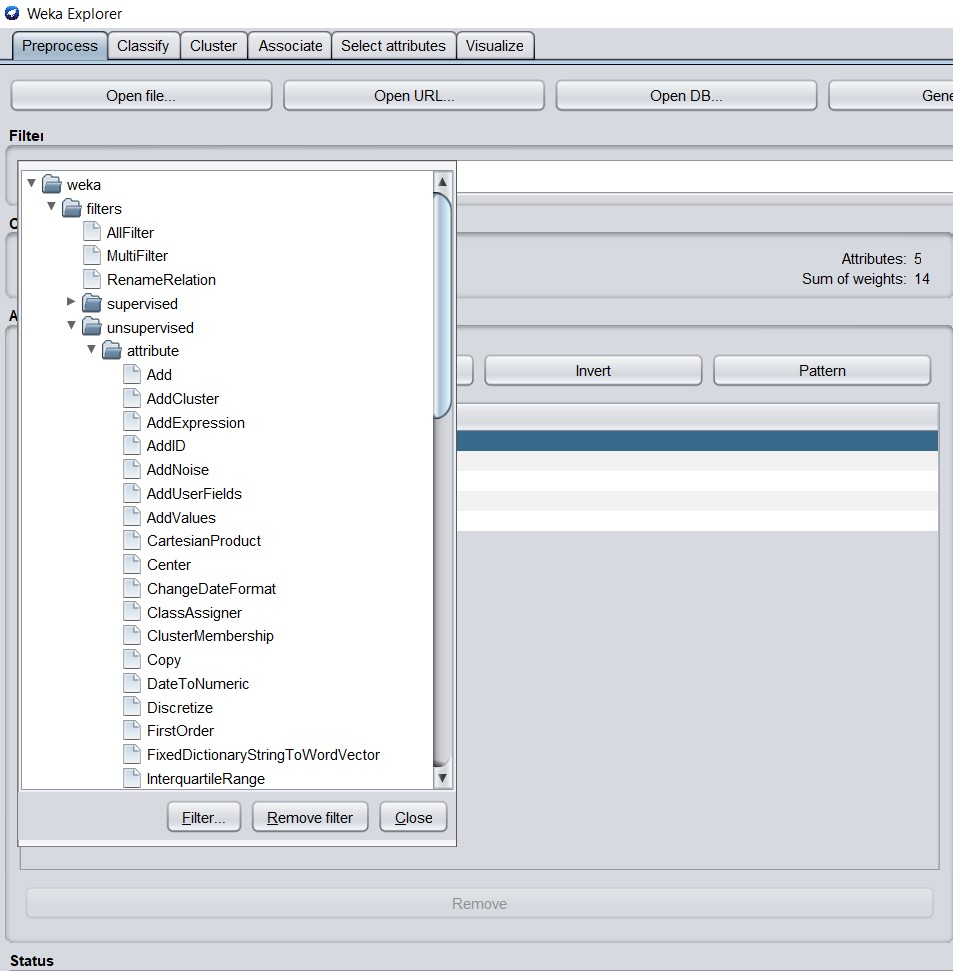
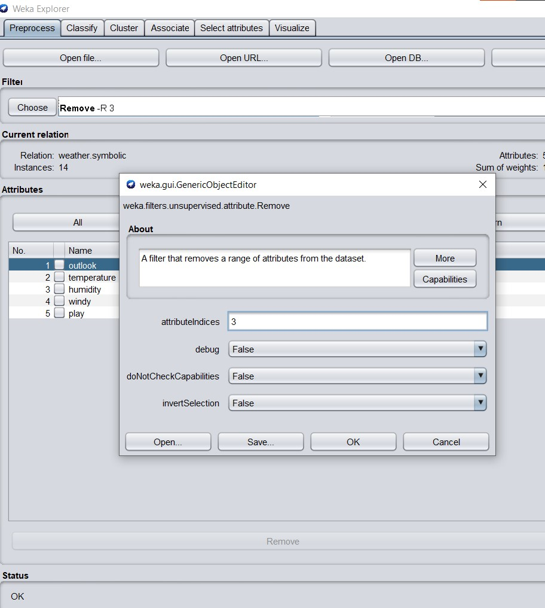
As a result, look at the two photos below, the attribute with the index 3 which was humidity is now removed from the dataset.
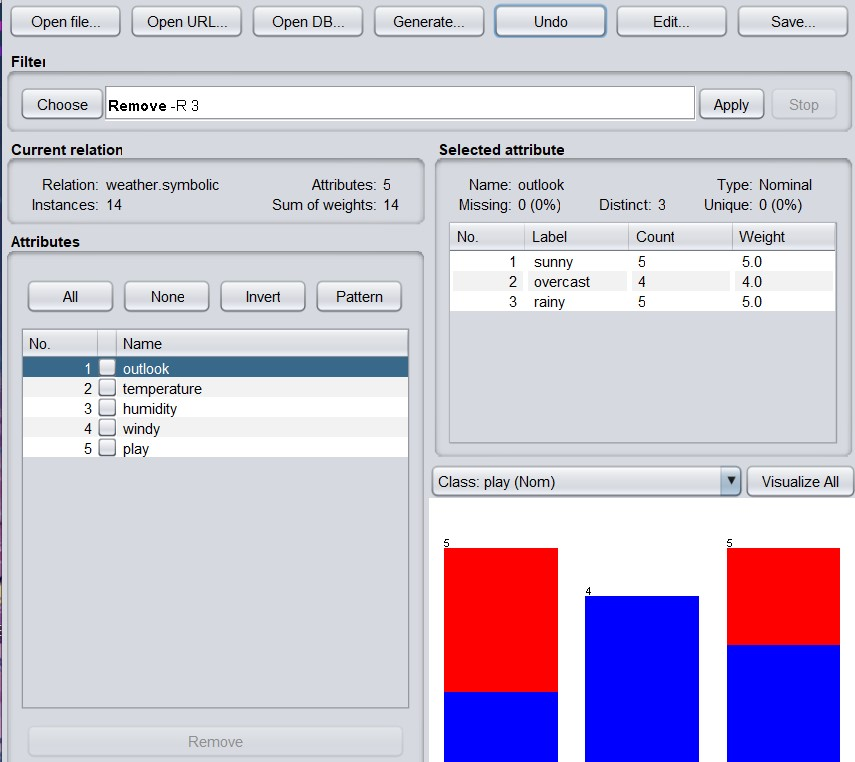
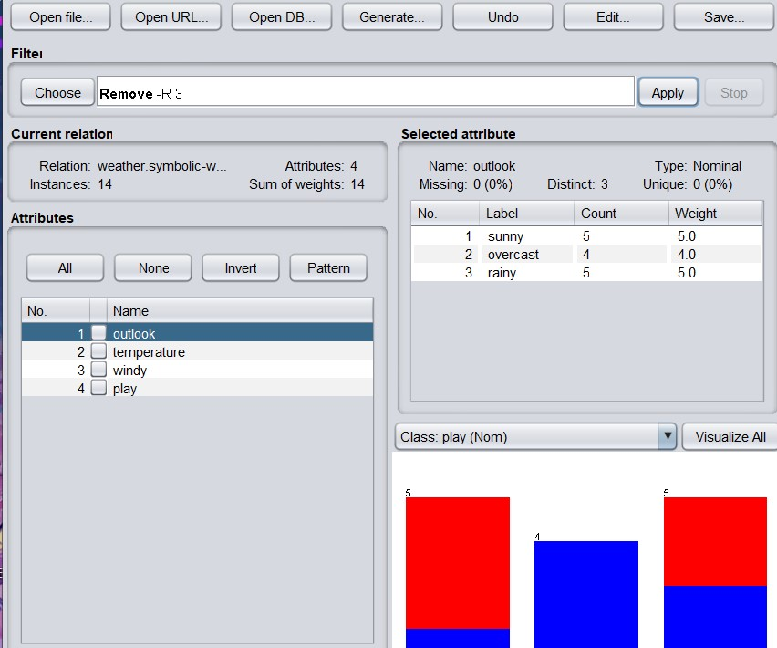
Click the UNDO button to bring back the original dataset.
For this part, we are going to use the iris.arff dataset. Open the dataset and go to the visualize tab in the far right side next to the select attributes tab
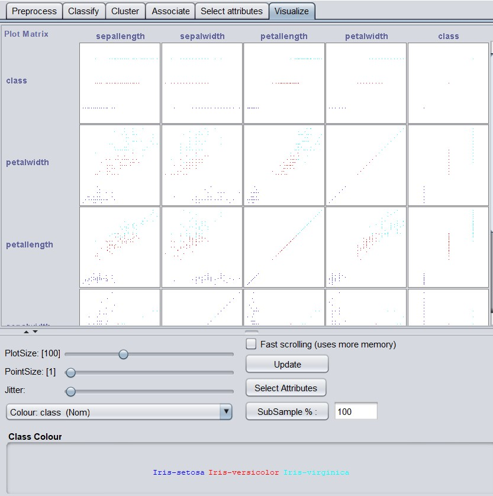
As you can see, there are numerous ways on how to graphically represent our data using WEKA. If you click one of the representations, you are presented with a graph. You can customize these "plots" by color or by what these plots represent. If you click each individual plot, it shows the information that the plot represents in the data. The Jitter function allows you to disperse the plots in order to see other plots that are close to each other/ overlap one another.
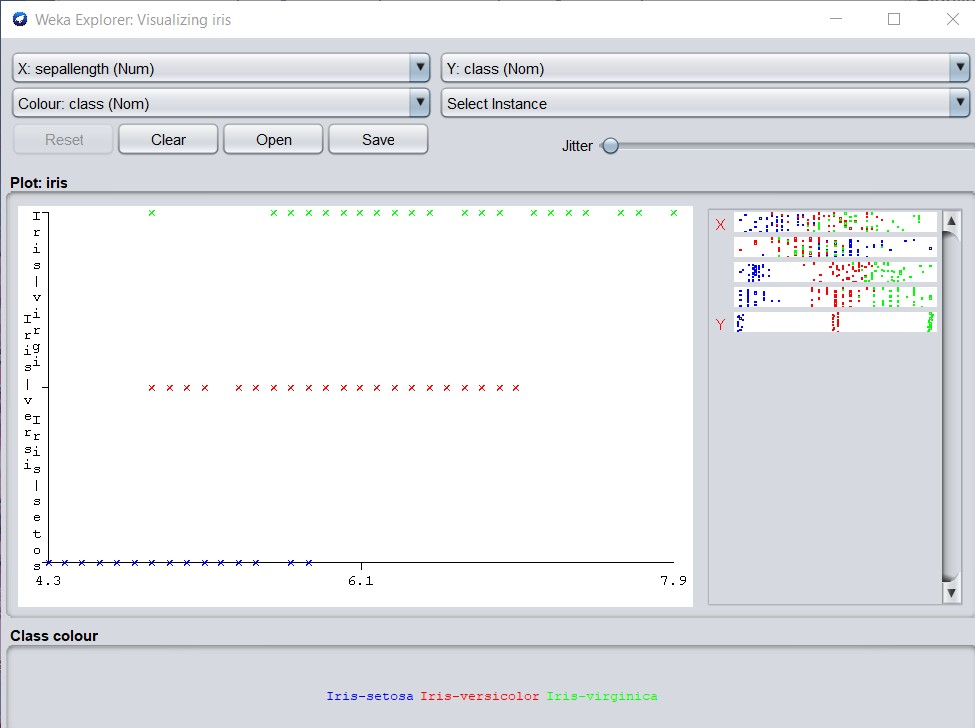
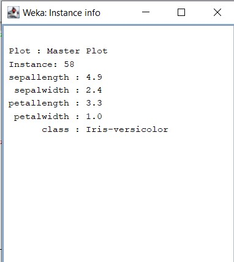
Now with the basic information represented in the following sections, it is up to you to play around and discover the many functionalities that WEKA has to offer when it comes to data mining and machine learning! Have fun with WEKA!
More Informational Videos
-
The summary diagram and introduction is referenced from
this site
-
All other information is referenced from
here in the official WEKA MOOC website